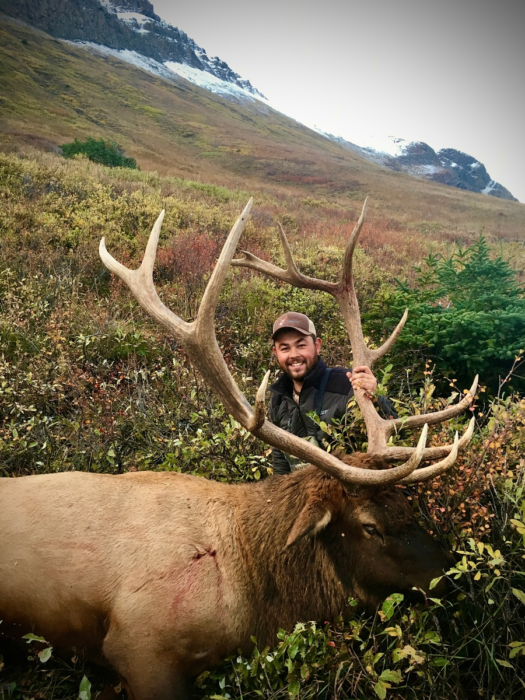

Elk are grazing animals preferring grasses to woody browse. Across their mountain range elk inhabit benches, foothills, and alpine bowls with access to meadows, avalanche chutes or other open grazing areas. Preferably, these areas are close to dark timber and water where the elk can remain cool during summer and fall heat however elk will travel miles in each direction from bedding to food and water in marginal habitat.
Alberta mountain elk habitat varies based on what part of the province they inhabit. South of the Bow River, sparce forest of lodgepole pine at higher elevations hold elk while further north spruce and white pine dominated forests become the bedding habitat of choice. Elk inhabit a more specific elevation gradient than other mountain species preferring slopes under 20 degrees and heavily utilising north facing slopes for bedding and water while moving to south facing slopes at twilight and through the night to feed on the more exposed and grass rich faces.
While elk can be found throughout the entire span of Alberta’s east slopes, distribution can be spotty in some areas with most of the mountain elk in the province being found in specific drainages. Numbers wise, most Mountain Elk can be found in Alberta’s three mountain National Parks or south of the Bow River with large populations in the Castle, Oldman, Bow and Livingston drainages and moderate populations in the Highwood, Sheep, and Elbow River drainages. North of the Bow distribution and numbers decrease dramatically with moderate populations along the Athabasca, Blackstone, and Clearwater drainages and small populations scattered throughout other tributary systems. Large herds historically lived in the Hinton, Grande Cache and YaHa Tinda areas however only the YaHa Tinda valley along the upper Red Deer River still holds large populations of elk.
| Hotspot | Management Zones | Population Viability | Trophy Quality |
|---|---|---|---|
| Castle Wildland | WMU 400 | Moderate-High | Low |
| Kananaskis | WMU 404, 406, 408 | Moderate | High |
| YaHa Tinda | WMU 417, 418 | High | Moderate-High |
| Clearwater | WMU 420, 422, 429 | Moderate | Moderate-High |
| Blackstone | WMU 434 | Low-Moderate | Moderate |
| Hinton | WMU 438, 439 | Moderate | Moderate |
Elk hunting strategies can be broken down into 4 distinct times of year based on breeding activity (rut) and migration routes.
Depending on latitude and photoperiod, the timing of the elk rut can vary region to region. The time before this main breeding period (rut) is often referred to as the pre-rut and usually takes place from late August in to the first week or two of September as Bulls (males) begin to establish territories and take inventory of the cows (females) near to them. During this period bulls are relatively active so glassing open areas looking for bulls as they travel the mountain can be productive at first and last light. For bowhunters, hunting water sources during this period can be very productive as temperatures are often high and elk spend long periods of the day on cooler northern slopes near water. Soft cow calls or light location bugling are the name of the game for calling elk at this time as bulls will often respond as they gather the first few cows to their harem.
During the rut itself hunters, no matter their weapon of choice, should focus on trying to call and locate elk with a mix of bull and cow vocalisations. Bulls are building up their harem of cows and are fiercely protective of their group from rival bulls. Pretending to be a lost cow or small satellite bull can be very productive. This is undoubtedly the best time to be hunting elk in the mountains. Locate bulls and close the distance, once within 100 yards use a series of challenge bugles, cow calls, and brush raking to attempt to pull the dominate bull away from the herd and into range for a shot. The bull in the photo above was called in using this method during the peak rut.
The post rut can be a frustrating time to hunt elk as bulls are less vocal and herd dynamics have changed drastically. Despite this, it can be a very fruitful time for knowledgeable elk hunters to capitalise on bulls as they move to a much more predictable schedule. Winter herds of cows and younger bulls will begin to form with the dominant bulls sometimes staying with these large herds as well. Mature bulls who may not be the herd bull for the area split off into small bachelor groups and seek sanctuary close to good food. Having wasted most of their fat reserves in the rut bulls are looking to pile on the calories and will often not be far from favourable feed and spend more time feeding, especially during cold weather and snow which often arrives during October. Look for meadows and feed right at snowline during this time as bulls will often be the last animals to abandon the mountain for lower elevations. As snow piles up high hunt lower looking for sign around likely feeding areas as the elk herds and bachelor groups descend the mountain.
Late season is often the least utilized time of year for hunting mountain elk. Snow has pushed the elk to valleys and lower elevation foothills and similar strategies should be employed as the post rut keeping in mind that cold November temperatures can make hunting dangerous and potentially lethal. Now is a good time to hunt in groups. Get high and glass the lower country looking for tracks in the snow and elk feeding at first and last light. Use cow vocalisations while approaching herds from downwind to get within range for a shot.